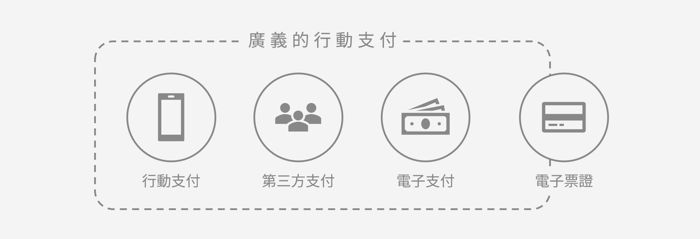

行動支付是指使用行動裝置進行付款的服務。在不需使用現金、支票或信用卡的情況下，消費者可使用行動裝置支付各項服務或數位及實體商品的費用。雖然使用非實體貨幣系統的概念已存在許久，但支援此系統的科技直到近期才開始普及。在台灣，主要的行動支付的方式大致上可分為掃碼型（QR Code）和感應型（NFC）；而行動支付的種類又可以細分為「行動支付」、「第三方支付」、「電子支付」及介於行動支付邊緣的「電子票證」。
| Apple Pay | Samsung Pay | Google Pay | |
|---|---|---|---|
| 支援卡別 | VISA、Master、JCB 信用卡、簽帳金融卡 | VISA、Master 信用卡、簽帳金融卡 | VISA、Master 信用卡、簽帳金融卡 |
| 支援功能 | NFC | NFC、MST磁條 | NFC |
| 第三方支付 | 電子支付 | 電子票證 | |
|---|---|---|---|
| 主要功能 | 只能從事代收代付。 | 可儲值、轉帳、代收代付。 儲值金額上限為 NT$ 5萬。 | 可儲值。 儲值金額上限為 NT$ 1萬。 |
| 市場代表 | Line Pay、Gomaji Pay、支付連(PC home)等6300餘家。 | Line Pay 一卡通、街口支付、橘子支付、歐付寶及銀行等。 | 悠遊卡、一卡通、愛金卡(iCash)、HappyCash有錢卡等。 |